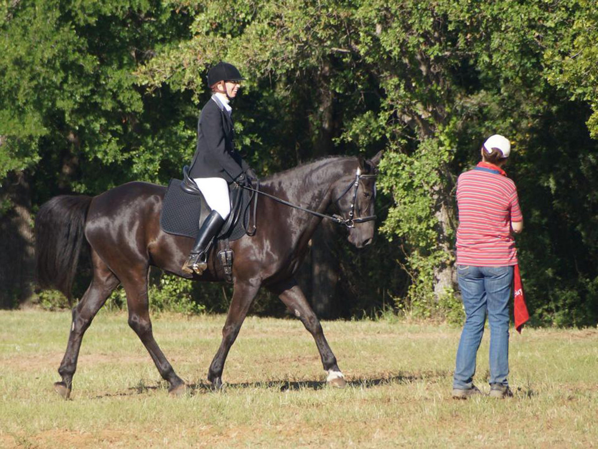
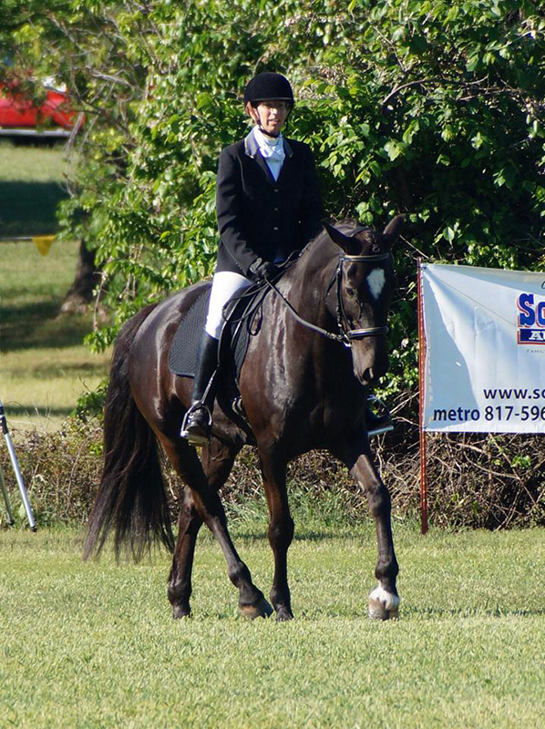
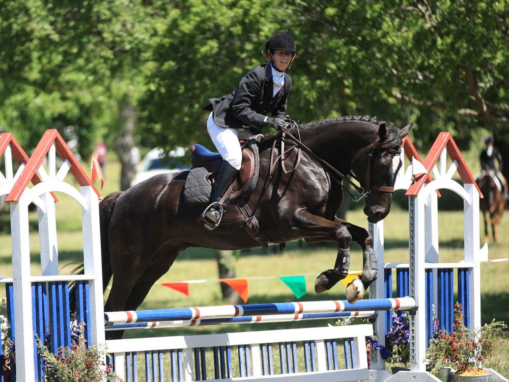
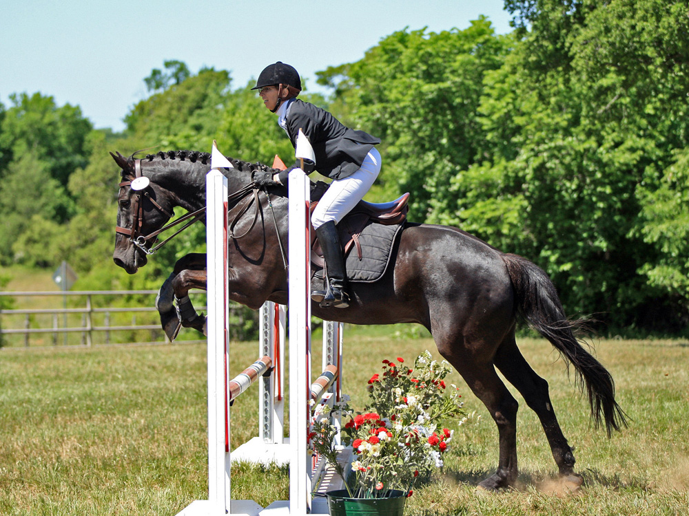
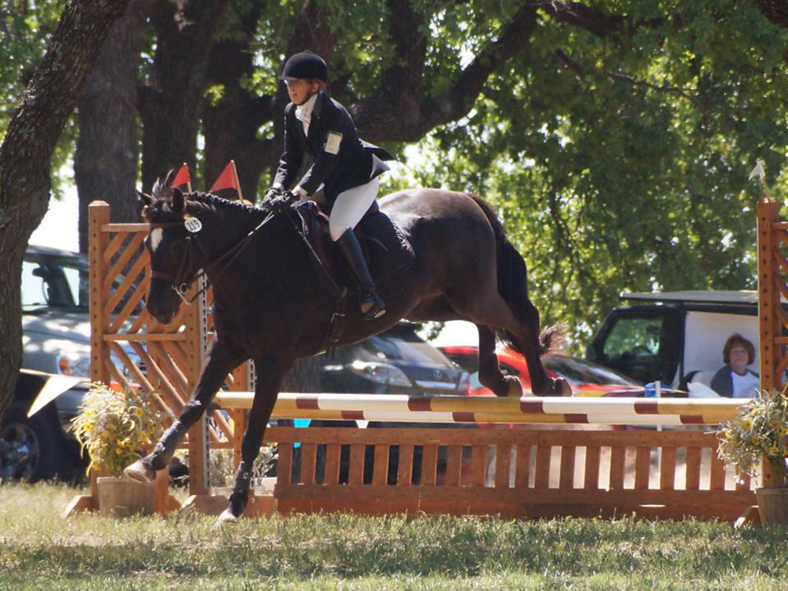
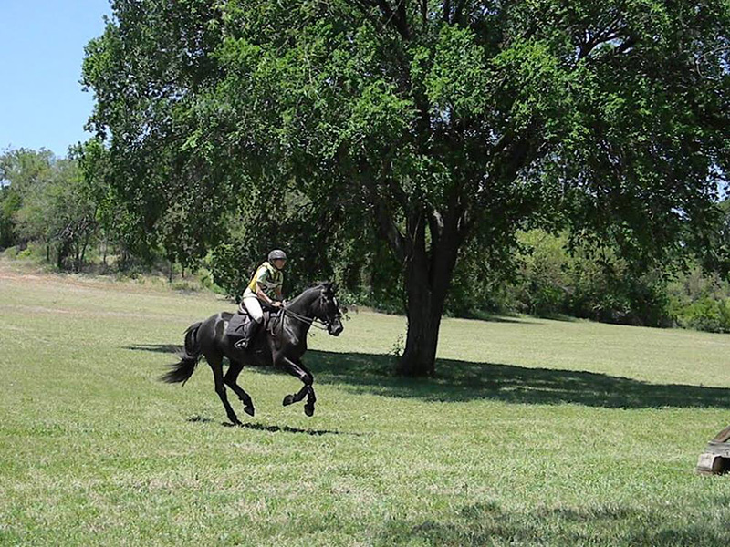
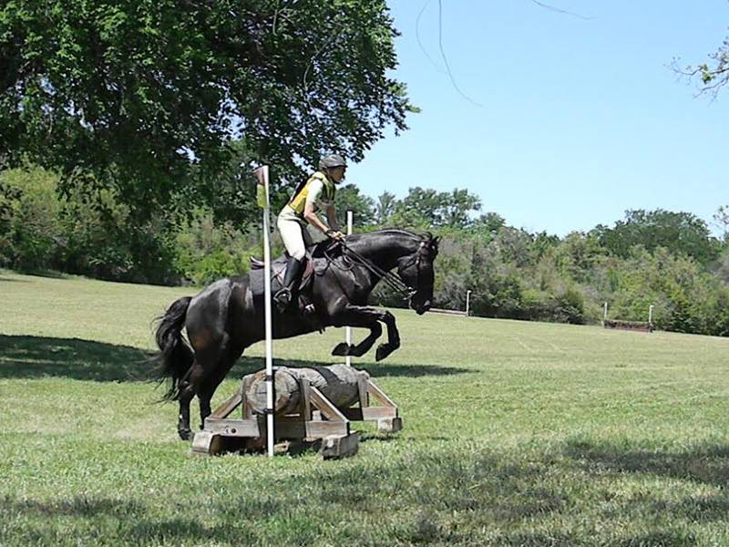
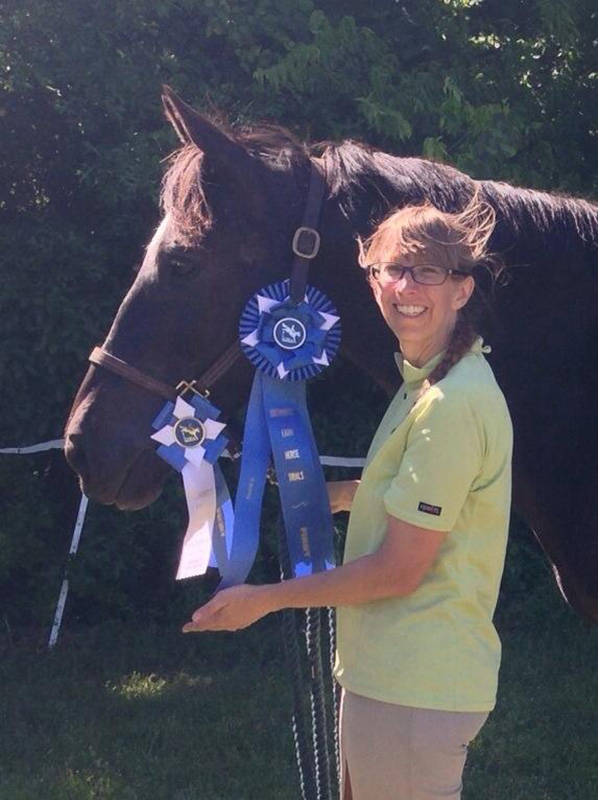

5/2-4/2014
Beginner
Novice Horse Trial on Miaren
Greenwood Farm
We had a lot of nerves to deal with here. Miaren found everything
interesting and exciting
and I was stressed to be on an enthusiastic Miaren. We were 1st after
dressage with a 33.2
and stayed there even with a rail down in stadium. We were a bundle of
nerves
in the XC warm up, but but after a while
when he'd squeal in his transitions we'd just laugh and shake our heads.
He was having fun. Once we were on course he was happy and
looking for the
next fence. Half way through I was tired, but I could relax and trust him.
Our first recognized event was a success.

Notice
the tail being 'expressive'. He's a rather fit, energetic guy. Even
the heat didn't matter to him.

Not
our best dressage test. It's been a while since he's leapt into his
transitions. At one point in the trot he jumped to the side for fun.
He was also irritated by the braids and kept throwing his head
around in the warm up. He's an opinionated one. Luckily we've done a
lot of dressage work and he held it together even though he really
wanted to be running and jumping.

First fence on course.
Greenwood
Stadium © Troy Roane Photography

Showing
off his pretty braids
Greenwood Stadium © Troy Roane Photography

Heading
to the finish flags.
 Half
way through, and I was getting tired.
Half
way through, and I was getting tired.
Greenwood XC © Troy Roane Photography

I
love that while we're cantering down hill, he's so balanced and up
in front without a lot of pulling from me as we approach this jump.
Elise got these for me.

He
got a short spot and I went to my default pop out of the saddle to
get out of his way. I can hear my trainer yelling hips back when I
look at this one.
Some day I'll be able to think around an entire xc course. Just not
yet.

A
long, exciting weekend with a cool ending.